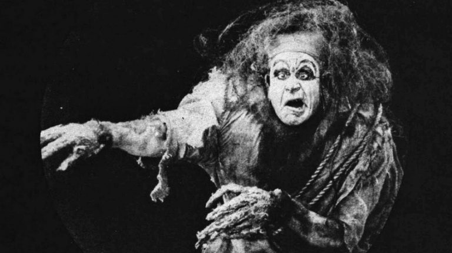

Horror is a film genre that seeks to elicit fear or disgust in its audience for entertainment purposes. Horror films often explore dark subject matter and may deal with transgressive topics or themes. Broad elements include monsters, apocalyptic events, and religious or folk beliefs. Cinematic techniques used in horror films have been shown to provoke psychological reactions in an audience. Horror films have existed for more than a century. Early inspirations from before the development of film include folklore, religious beliefs and superstitions of different cultures, and the Gothic and horror literature of authors such as Edgar Allan Poe, Bram Stoker, and Mary Shelley. From origins in silent films and German Expressionism, horror only became a codified genre after the release of Dracula (1931). Many sub-genres emerged in subsequent decades, including body horror, comedy horror, slasher films, supernatural horror and psychological horror. The genre has been produced worldwide, varying in content and style between regions. Horror is particularly prominent in the cinema of Japan, Korea, Italy and Thailand, among other countries. Despite being the subject of social and legal controversy due to their subject matter, some horror films and franchises have seen major commercial success, influenced society and spawned several popular culture icons.
Over the course of a century, film horror has gone through many peaks and troughs, leading us into the somewhat contentious period we find ourselves in today. The history of horror as a film genre begins with—as with many things in cinema history—the works of George Mellies. Just a few years after the first filmmakers emerged in the mid-1890s, Mellies created “Le Manoir du Diable,” sometimes known in English as “The Haunted Castle” or “ The House of the Devil,” in 1898, and it is widely believed to be the first horror movie. The three-minute film is complete with cauldrons, animated skeletons, ghosts, transforming bats, and, ultimately, an incarnation of the Devil. While not intended to be scary—more wondrous, as was Mellies’ MO—it was the first example of a film (only just rediscovered in 1977) to include the supernatural and set a precedent for what was to come. Where the genre will go over the next hundred years is anyone’s guess, but sometimes it’s good to look back on the long road we’ve traveled to get to this point.
Widely considered to be the finest era of the genre, the two decades between the 1920s and 30s saw many classics being produced and can be neatly divided down the middle to create a separation between the silent classics and the talkies. On the silent side of the line, you’ve got monumental titles such as The Cabinet of Dr. Caligari (1920) and Nosferatu (1922), the first movies to really make an attempt to unsettle their audience. The latter title is one of Rotten Tomatoes’ best horror movies of all time and cements just about every surviving vampire cliché in the book. Once the silent era gave way to the technological process, we had a glut of incredible movies that paved the way for generations to come, particularly in the field of monster movies – think the second iteration of Frankenstein (1931), The Mummy (1932) and the first color adaptation of Dr. Jekyll and Mr. Hyde (1931). The 30s also marked the first time that the word “horror” was used to describe the genre—previously, it was really just romance melodrama with a dark element—and it also saw the first horror “stars” being born. Bella Lugosi (of Dracula fame) was arguably the first to specialize solely in the genre. And as well as unnerving its viewers, the genre was starting to worry the general public at this point, with heavy censoring and public outcry becoming common with each release. Freaks (1932) is a good example of a movie that was so shocking at the time it got cut extensively, with the original version now nowhere to be found. Director Tod Browning—who had previously created the aforementioned and wildly successful Dracula—saw his career flounder at the hands of the controversy. The shock value of Freaks is one of the few that has aged well up until the present day and is still a highly disturbing watch.
The state of the horror industry is hotly contested. With the genre seemingly relying on churning out remakes, reboots, and endless sequels, many argue that it’s languishing in the doldrums once again with little originality to offer a modern audience. The resurgence of ‘torture porn’ is also derided as a subgenre, having come back into the fore in the wake of the 2000s Saw and Hostel franchises with no signs of slowing down. On the other hand, glimmers of hope shine through with examples of extreme originality and artistry. Cabin in the Woods (2012) has been heralded as this decade’s Scream, and the recent releases of The Babadook and A Girl Walks Home Alone at Night (both 2014) breathed new life into the genre. Jordan Peele, writer, producer, and actor, rose as the new king of horror with original films, including Get Out (2017), Us (2019), and Nope (2022), which top Rotten Tomatoes’ best horror movie list. While scary, the films are also smart and provide sociopolitical commentary, as Peele explained in an interview with Time Magazine. NYFA Alum Tracy Oliver is a co-writer of the 2022 film The Blackening, a movie that makes fun of horror clichés but also calls out racial stereotypes. Both films, similar to the first horror film and a variety of others in the history of horror, don’t have the main goal of scaring the audience.
| Movie name | The plot | IMDB | 1. Alien (1979) | The crew of a commercial spacecraft encounter a deadly lifeform after investigating an unknown transmission. | 8.5 |
|---|---|---|
| 2. Psycho (1960) | A Phoenix secretary embezzles $40,000 from her employer's client, goes on the run and checks into a remote motel run by a young man under the domination of his mother. | 8.5 |
| 3. The Shining (1980) | A family heads to an isolated hotel for the winter where a sinister presence influences the father into violence, while his psychic son sees horrific forebodings from both past and future. | 8.4 |
| 4. The Exorcist (1973) | When a teenage girl is possessed by a mysterious entity, her mother seeks the help of two priests to save her daughter. | 8.1 |
| 5. Jaws (1975) | When a killer shark unleashes chaos on a beach community off Cape Cod, it's up to a local sheriff, a marine biologist, and an old seafarer to hunt the beast down. | 8.1 |
| 6. Rosemary's Baby (1968) | A young couple trying for a baby moves into an aging, ornate apartment building on Central Park West, where they find themselves surrounded by peculiar neighbors. | 8.0 |
| 7. Nosferatu (1922) | Vampire Count Orlok expresses interest in a new residence and real estate agent Hutter's wife. | 7.9 |
| 8. Halloween (1978) | Fifteen years after murdering his sister on Halloween night 1963, Michael Myers escapes from a mental hospital and returns to the small town of Haddonfield, Illinois to kill again. | 7.7 |
| 9. Invasion of the Body Snatchers (1956) | A small-town doctor learns that the population of his community is being replaced by emotionless alien duplicates. | 7.7 |
| 10. The Conjuring (2013) | Paranormal investigators Ed and Lorraine Warren work to help a family terrorized by a dark presence in their farmhouse. | 7.5 |